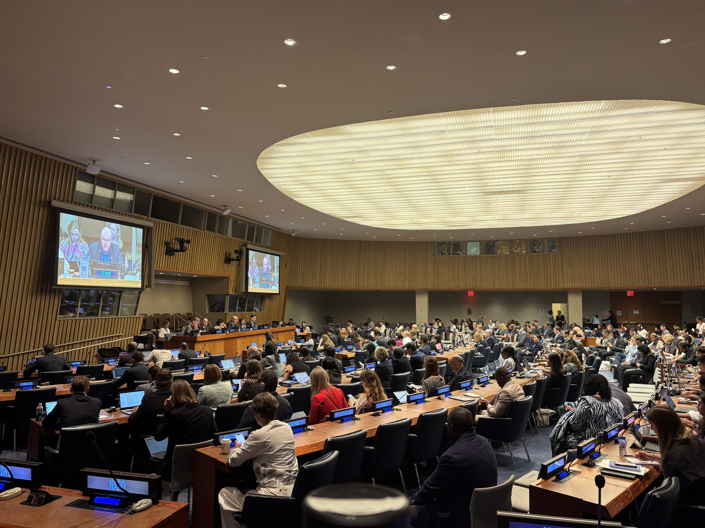
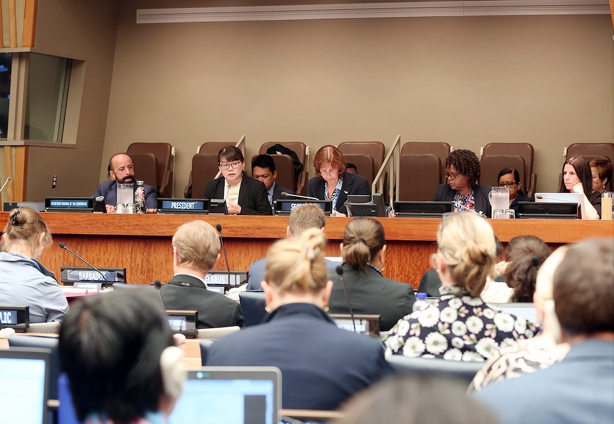
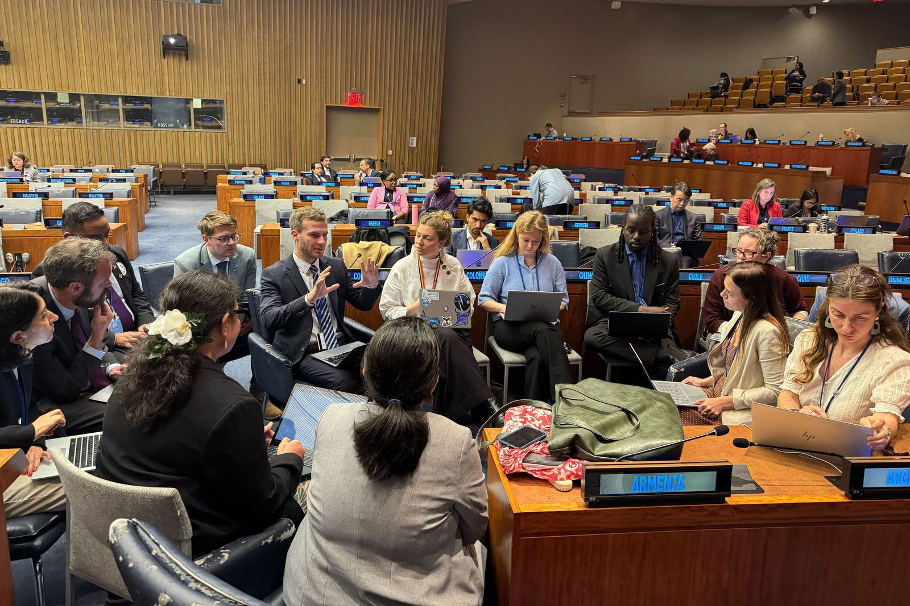
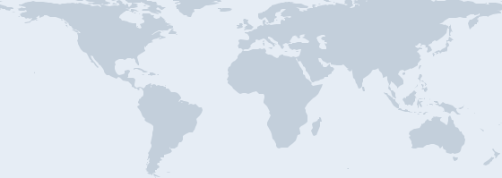
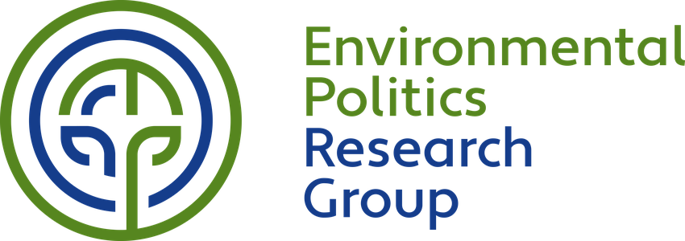

This dashboard was created by Emil W. Hildebrand as part of the ERC-funded project TwinPolitics led by Prof. Alice Vadrot and hosted by the University of Vienna.
The BBNJ negotiations at a glance
The BBNJ Agreement process is complex, and keeping tabs on everything can be a challenge.
Here, we have created an overview based on our own Learn more about the TwinPolitics and MARIPOLDATA projects and how we collect our data at the bottom of this page., giving you a bird’s-eye view of the whole process from its first Intergovernmental Conference (IGC) in 2018 to the last Preparatory Commission (PrepCom) in 2026.
Scroll your way downwards, click around to learn more about specific issues and actors, or use the menu to quickly navigate around.
Drag the globe to turn it
The BBNJ Agreement
Biodiversity beyond national jurisdiction (BBNJ) Agreement. Also known as the High Seas Treaty or, formally, the Agreement under the United Nations Convention on the Law of the Sea on the Conservation and Sustainable Use of Marine Biological Diversity of Areas beyond National Jurisdiction. is the first treaty to protect marine biodiversity on the high seas as a whole, with shared rules for protected areas, environmental impact assessments, capacity building and the fair sharing of benefits and data from marine genetic resources. Roughly two-thirds of the world’s ocean surface is considered high seas. That means that the BBNJ Agreement covers about 43% of the Earth’s surface:
The BBNJ Agreement entered into force on 17 January 2026, and its first Conference of the Parties (COP) will take place in New York from 11 to 22 January 2027.
But how did we get here?

The negotiation process
The BBNJ Agreement was adopted on 19 June 2023.
Before its adoption there were seven Intergovernmental Conferences (IGCs), and following it were three Preparatory Commissions (PrepComs) to prepare for the first Conference of the Parties (COP).
Read the Earth Negotiations Bulletin (ENB) summary report of each meeting by clicking on it. Hover over a meeting for its dates. Click on Agreement to visit the full text
It’s a complex process with many moving parts. In our data, we count 0 statements delivered across plenaries, working groups, and informal sessions:
During the seven Intergovernmental Conferences (IGCs) leading up to the adoption, states negotiated the Agreement text and its central package elements:
Click a package element to read about it.
Read moreThe Pew Charitable TrustsMarine genetic resources are the genetic material of life on the high seas and the digital sequence information drawn from it. They can be valuable for medicine, food and industry. The Agreement does not restrict access but requires transparency about collection and use. Benefits in the form of money and knowledge are to be shared fairly and equitably, particularly with developing countries.
Area-based management tools such as marine protected areas can be used to protect specific parts of the high seas. The Agreement sets out a legal process for establishing them: a Party proposes an area, scientists and stakeholders review the proposal and the COP decides. The aim is a well-connected network of protected areas that contributes to the global target of protecting 30% of the ocean by 2030.
Planned activities on the high seas have to be assessed for possible harm to the marine environment before they go ahead. The reports are made public and the State responsible decides whether an activity proceeds. An activity should only go ahead if significant harm can be prevented or managed. New uses such as high seas aquaculture or geoengineering are also covered.
Capacity building and the transfer of marine technology are meant to help developing countries implement the Agreement and take part in it. Examples include sharing data and setting up technical and research programmes. The topic has its own chapter but also runs through the other three elements. A dedicated committee will monitor and review progress.
The three Preparatory Commissions (PrepComs) following the Agreement adoption were spent negotiating the institutional infrastructure of the Agreement and preparing for the first COP.
The most discussed items were:

Who took part in the negotiations?
More than 120 states delivered statements during the negotiations, and over 180 were represented through country blocs.
In addition, more than 75 nongovernmental and international actors took part.
Some actors are more active than others.
See which states (and the EU), international organisations, and non-governmental actors engaged the most at the IGCs and PrepComs:
HoverTap an actor to see its full name.
To date, 144 states and the EU have signed the Agreement, and 104 states and the EU have ratified it.
How active states are and on which topics also varies. Try toggling between different views:
Statements made during the IGCs and PrepComs. Bloc membership gathered from official lists where they exist. Country borders are drawn from Natural Earth data.

What happens next?
Next on the agenda is the first Conference of the Parties (COP) in New York in January 2027. The COP is the governing body of the Agreement and is the space where the Parties will take decisions on its implementation. At its first meeting the COP is set to decide how the Agreement’s bodies will work, building on the preparations of the three PrepComs.
ClickTap a body to see its anticipated functions.
Article 47
Conference of the Parties (COP)
The governing body of the Agreement, where Parties meet at regular intervals to make key decisions, keep the Agreement under review, and set up further subsidiary bodies if needed.
Article 49
Scientific and Technical Body
A body of experts nominated by the Parties and elected by the COP, giving scientific and technical advice, for example on proposals for protected areas and on standards for environmental impact assessments.
We have written about the Scientific and Technical Body, see our paper in International Affairs here.
Article 15
Access and Benefit-Sharing Committee
A committee helping to develop guidelines for sharing the benefits from marine genetic resources and digital sequence information, and making recommendations to the COP on access and benefit-sharing.
We have written about the common heritage principle in BBNJ, see our paper in Environmental Politics here.
Article 46
Capacity-Building and Transfer of Marine Technology Committee
A committee helping to assess the needs of developing States in capacity-building and marine technology, and reviewing the capacity-building initiatives under the Agreement.
We have written about the unequal distribution of marine research capacity, see our papers in Marine Policy here and in Environmental Science & Policy here.
Article 52
Finance Committee on Financial Resources
A committee advising the COP on how to identify and mobilise funding, on the financial needs of developing States, and on the transparent and timely disbursement of funds.
Article 55
Implementation and Compliance Committee
A committee supporting Parties implementing the Agreement, as well as promoting compliance by the Parties.
Article 50
Secretariat
The administrative body of the Agreement, facilitating meetings, running day-to-day tasks, managing the Clearing-House Mechanism, and preparing documents for the COP and its subsidiary bodies.
Its seat will be decided at COP-1, between the joint bid of Belgium and Chile and the bid of China.
Article 51
Clearing-House Mechanism
The central open-access online platform where Parties share information, for example on marine genetic resources, protected areas, impact assessments and capacity-building.
We have written about the Clearing-House Mechanism, see our paper in Marine Policy here.
Until now, the UN Division for Ocean Affairs and the Law of the Sea (DOALOS) has acted as the BBNJ’s interim secretariat.
Where the permanent secretariat will sit is one of the first and biggest decisions of the COP. The secretariat is central to supporting the work of the COP and its subsidiary bodies, organising official meetings, coordinating with other international bodies, as well as managing the Clearing-House Mechanism.
- Chile and BelgiumMarch 2023Chile and Belgium each announce their candidacies, for Valparaíso and Brussels
- PrepCom-2August 2025The PrepCom officially invites bids
- ChinaJanuary 2026China announces its candidacy for Xiamen
- PrepCom-3March 2026Belgium, Chile and China present their bids
- Joint bidNovember 2026Belgium and Chile join their bids
- COP-1January 2027COP-1 decides the seat
Two bids are now on the table: a joint bid by Belgium and Chile, with the secretariat in Valparaíso and the Clearing-House Mechanism in Brussels, and a bid by China, with both in Xiamen.

 ValparaísoChile’s bid
ValparaísoChile’s bid
 BrusselsBelgium’s bid
BrusselsBelgium’s bid
 XiamenChina’s bid
Joint statement
XiamenChina’s bid
Joint statement
Click a city to open its original bid, or the dashed line for the joint statement of Belgium and Chile.
The BBNJ Agreement is not alone in the high seas. Another central issue going forward will be how the Agreement relates to existing regimes with mandates in areas beyond national jurisdiction – so-called relevant legal instruments, frameworks and bodies (IFBs).
In the paper ‘Not ‘undermining’ who? Unpacking the emerging BBNJ regime complex’, Langlet and Vadrot (2023) identify relevant IFBs and link them to package elements through statements made by states in the negotiations. The network below builds on their method, covering all seven of the IGCs and the three PrepComs:
Each dot is sized by the number of state statements mentioning the IFB. The 20 most mentioned IFBs and the eight most linked PrepCom agenda items are shown. Hover, click or drag the dots to explore.Tap the dots to explore. For a more granular and in-depth analysis of IGC-1 to IGC-5 and an explanation of the methodology, see Langlet and Vadrot (2023).
The COP will have to decide how to cooperate with these existing IFBs on issues like marine protected areas, environmental impact assessments, marine genetic resources, capacity-building and the sharing of data through the Clearing-House Mechanism, while ‘not undermining’ their existing mandates.
These and many other questions will be on the table at COP-1 in January 2027. We will be on-site in New York to report from the COP and to continue collecting our data.
Literature
In the meantime, you can browse all of our publications on the BBNJ so far, or explore our curated collection of research on the BBNJ Agreement and its negotiations:
Who are we?
We are researchers of the MARIPOLDATA (2018 to 2024) and TwinPolitics (2024 to 2029) projects, funded by the European Research Council and led by Prof. Dr. Alice Vadrot. We are based at the Department of Political Science, University of Vienna (Vienna, Austria) and part of the Environmental Politics Research Group. We study multilateral negotiations on biodiversity, deep-sea mining and plastics in areas beyond national jurisdiction.
The data from 2018 to 2024 is available online for download through the Austrian Social Science Data Archive. A full data set including data from BBNJ, the International Seabed Authority (ISA), the Convention on Biological Diversity (CBD) and the Intergovernmental Negotiating Committee for a global Plastics treaty (INC) will be made available in the future as part of the TwinPolitics project.
Download the data MARIPOLDATAbase, 2018 to 2024 Austrian Social Science Data Archive → MARIPOLDATA2018 to 2024
TwinPolitics2024 to 2029
MARIPOLDATA2018 to 2024
TwinPolitics2024 to 2029
